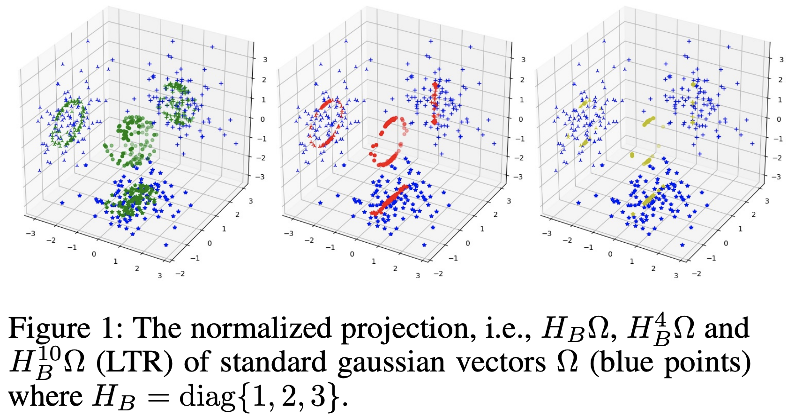
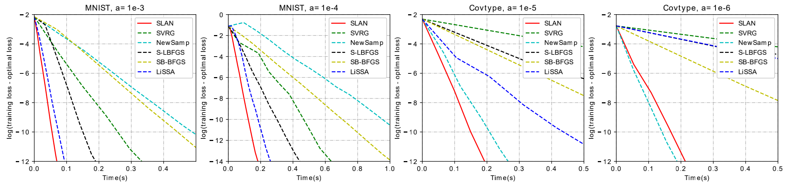
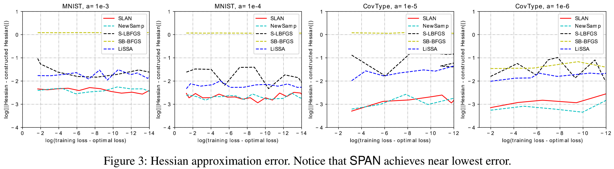
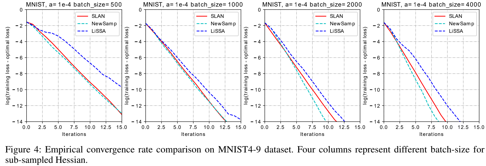
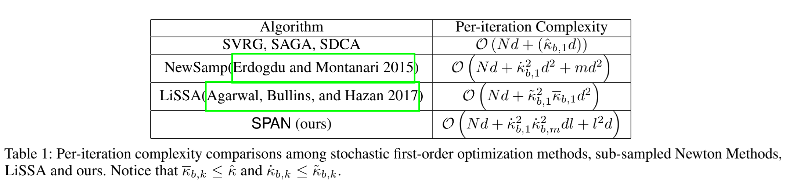
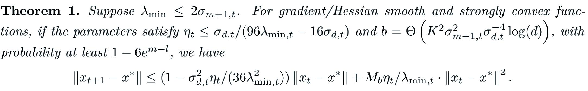

@inproceedings{huang2020span,
title={SPAN: A Stochastic Projected Approximate Newton Method},
author={Huang, Xunpeng and Liang, Xianfeng and Liu, Zhengyang and Li, Lei and Yu, Yue and Li, Yitan},
booktitle={Proceedings of the AAAI Conference on Artificial Intelligence},
volume={34},
number={02},
pages={1520--1527},
year={2020}
}